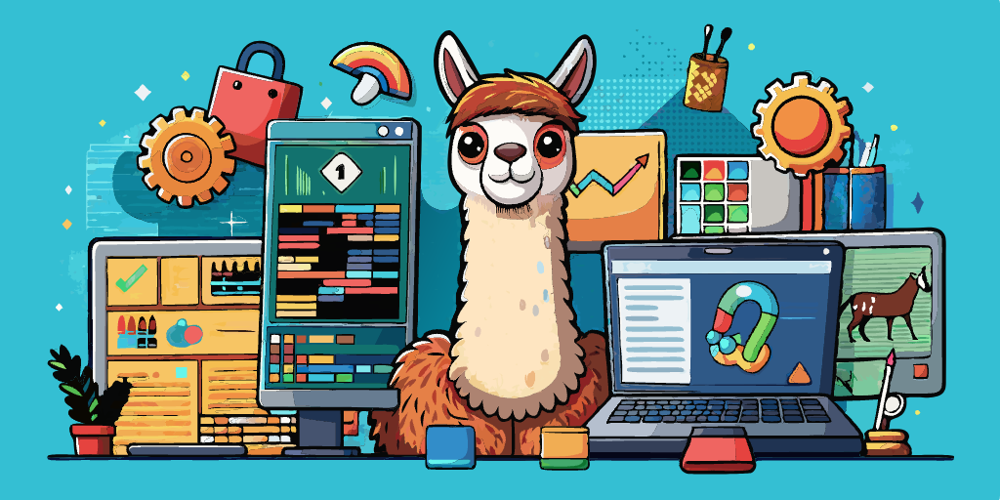

Meta ha lanzado Code Llama, un nuevo competidor para GitHub Copilot en el ámbito de la programación.

Meta ha lanzado Code Llama, un nuevo competidor para GitHub Copilot en el ámbito de la programación.
La inteligencia artificial (IA) está transformando la manera en que los programadores trabajan. De acuerdo con una encuesta de GitHub realizada en EE. UU., el 92% de los desarrolladores en ese país utilizan herramientas de codificación basadas en IA, y es probable que esta tendencia se extienda globalmente.
Este fenómeno ha llevado a que más empresas incursionen en la creación de asistentes para programadores. Copilot es uno de los más populares, pero recientemente han surgido otras alternativas, como CodeWhisperer de Amazon. Además, nuevos modelos de lenguaje están facilitando el desarrollo de estas herramientas.
Code Llama, un nuevo modelo de Meta para la codificación
Meta ha presentado Code Llama, un modelo de lenguaje basado en Llama 2, diseñado para apoyar a los programadores. Su principal ventaja es la capacidad de generar código y responder en lenguaje natural, similar a ChatGPT. Por ejemplo, puedes pedirle que escriba una función para generar la secuencia de Fibonacci. También puede crear código completo en varios lenguajes como Python, C++, Java, PHP, TypeScript (JavaScript), C#, Bash, entre otros. Algunas versiones del modelo están especializadas para ciertos lenguajes. Sin embargo, una vez que descargas Code Llama, no podrás utilizarlo en línea.
Requisitos para utilizar Code Llama
Aunque Meta permite descargar y utilizar el modelo de forma gratuita para diversos propósitos, hacerlo funcionar localmente en tu computadora requiere pasos avanzados, como elegir el tamaño del modelo (7B, 13B y 34B), disponer de suficiente potencia informática, herramientas de compilación y una interfaz de usuario adecuada.
Futuro de Code Llama
Así como GitHub Copilot X se basa en una versión modificada de GPT-4, Code Llama tiene el potencial de ser el núcleo de nuevas herramientas de programación. En Meta, consideran que su modelo tiene amplias aplicaciones, desde la investigación hasta la creación de herramientas comerciales cerradas o de código abierto.